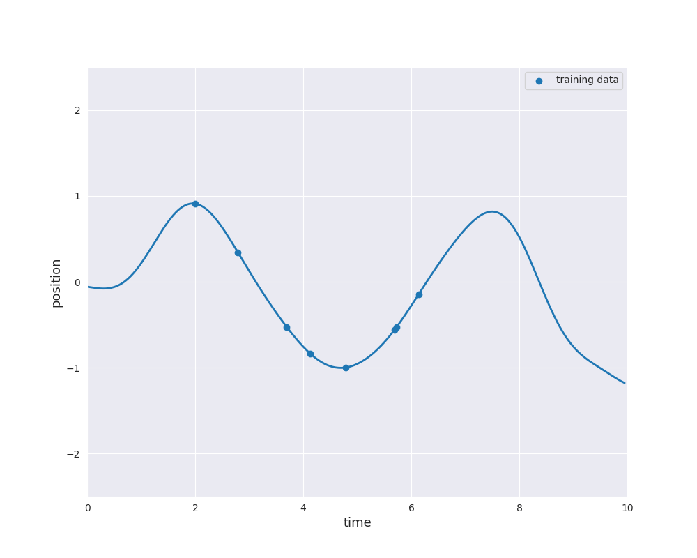

7.3. Gaussian Process Regression¶
In the machine learning context, Gaussian processes are used for Gaussian process regression or kriging. We have some data set \(\mathcal{D}\) of observations
similarly to the example in Linear Regression, but now the functional relation between inputs \(x_i\) and outputs \(y_i\) is not necessarily linear. Indeed, by assumption the relation is given by
where \(f\) is some function which is identified with (a sample path of) a suitable Gaussian process \(f\). Either \(\varepsilon_i=0\) for \(i=1,\dots,n\) if the data is noise-free or \(\varepsilon_i\), \(i=1,\dots,n\), are independent \(\mathcal{N}(0, \sigma_{\text{noise}}^2)\)-distributed random variables if the data is noisy. Please note that the labels \(y_i\) are assumed to be \(\mathbb{R}\)-valued. The case of multiple outputs is discussed later on in Extension to Multiple Outputs.
The basic idea is to consider only those sample paths of the Gaussian process which match the data. From the Bayesian point of view, the initial Gaussian process defines a prior distribution over functions and restriction to fitting sample paths yields the posterior distribution over functions given the data \(\mathcal{D}\). As an example, the prior can be the Gaussian process with RBF kernel from Gaussian Processes:

The follwing animation visualizes samples paths from the posterior distribution in use of eight noise-free observations from the sine function:
{kind=link}
Typically, the mean function is chosen to be zero. Otherwise \(m\) would already approximate the dependence of the output \(y\) of the input \(x\). Learning this relation is purpose of the regression model. However, if we still like to use a non-zero mean \(m\), this can also be done by substracting \(m(x_i)\) from \(y_i\) and considering a centered model on the residuals. Thus, we always make the assumption \(m=0\), i.e., we only consider centered Gaussian processes.
For a test point \(x^*\) the distribution of \(f(x^*)\) given the data \(\mathcal{D}\) is the conditional distribution which can be computed explicitly, since we are dealing with normal distributions. The prediction of the model at \(x^*\) is given by the mean of the conditional distribution and the uncertainty is quantified by the variance which corresponds to the variability of the string in the preceding animation. As seen before, this uncertainty can also be expressed in terms of credible intervals:

The following interactive plot shows how the distribution of one component of a two dimensional normally distributed random vector behaves if the other component is fixed. The main observation is that the fixed value has no impact on the other component if the correlation is zero. In this case, the two components are independent. Moreover, the impact increases as the absolute value of the correlation increases. This means for Gaussian process regression that the impact of training points \(x\) on the prediction for test points \(x^*\) depends on the variance \(k(x, x^*)\). Please open the notebook in Google Colab to use the visualization.
from IPython.display import display, clear_output
!pip install ipympl
clear_output()
%matplotlib inline
%config InlineBackend.figure_formats = ['svg']
import numpy as np
import matplotlib
from scipy.stats import norm, multivariate_normal
import matplotlib.pyplot as plt
import matplotlib.gridspec as gridspec
from ipywidgets import interact, FloatSlider
from mpl_toolkits.axes_grid1 import make_axes_locatable
import seaborn as sns
sns.set_style('darkgrid')
# Plot bivariate distribution
def generate_surface(mean, covariance, d):
"""Helper function to generate density surface."""
nb_of_x = 100 # grid size
x1s = np.linspace(-5, 5, num=nb_of_x)
x2s = np.linspace(-5, 5, num=nb_of_x)
x1, x2 = np.meshgrid(x1s, x2s) # Generate grid
tmp = np.stack((x1, x2), axis=-1)
pdf = multivariate_normal.pdf(tmp, mean=mean[:, 0], cov = covariance)
return x1, x2, pdf
@interact(x_condition=FloatSlider(value=1., min=-2, max=2, step=0.1, continuous_update=False),
y_condition=FloatSlider(value=-1., min=-2, max=2, step=0.1, continuous_update=False),
correlation=FloatSlider(value=0.99, min=-0.995, max=0.995, step=0.001, continuous_update=False))
def plot_conddistr(x_condition, y_condition, correlation):
d = 2 # dimensions
mean = np.array([[0.], [0.]])
cov = np.matrix([
[1, correlation],
[correlation, 1]
])
# Get the mean values from the vector
mean_x = mean[0,0]
mean_y = mean[0,0]
# Get the blocks (single values in this case) from
# the covariance matrix
A = cov[0, 0]
B = cov[1, 1]
C = cov[0, 1] # = C transpose in this case
# Calculate x|y
mean_xgiveny = mean_x + C /B * (y_condition - mean_y)
cov_xgiveny = A - C**2 /B
# Calculate y|x
mean_ygivenx = mean_y + C /A * (x_condition - mean_x)
cov_ygivenx = B - C**2 /A
# Plot the conditional distributions
fig = plt.figure(figsize=(9, 9))
gs = gridspec.GridSpec(
2, 2, width_ratios=[1.5, 1], height_ratios=[1.5, 1],
hspace=0.25)
plt.suptitle('Conditional distributions', y=0.93)
# Plot surface on top left
ax1 = plt.subplot(gs[0])
x, y, p = generate_surface(mean, cov, d)
# Plot bivariate distribution
con = ax1.contourf(x, y, p, 33, cmap='turbo')
# y=1 that is conditioned upon
ax1.plot([-3.5, 3.5], [y_condition, y_condition], 'r--')
# x=-1. that is conditioned upon
ax1.plot([x_condition, x_condition], [-3.5, 3.5], 'b--')
ax1.set_xlabel('$x$', fontsize=13)
ax1.set_ylabel('$y$', fontsize=13)
ax1.yaxis.set_label_position('right')
ax1.axis([-3.5, 3.5, -3.5, 3.5])
# Plot y|x
ax2 = plt.subplot(gs[1])
yx = np.linspace(-5, 5, num=250)
pyx = norm.pdf(yx, loc=mean_ygivenx, scale=np.sqrt(cov_ygivenx))
# Plot univariate distribution
ax2.plot(pyx, yx, 'b--',
label=f'$p(y|x={x_condition:.1f})$')
ax2.legend(loc=0)
ax2.set_xlabel('density', fontsize=13)
ax2.set_xscale('symlog')
ax2.set_xlim(0., 4.)
ax2.set_xticks(ticks=[1., 2., 3., 4.])
ax2.get_xaxis().set_major_formatter(matplotlib.ticker.ScalarFormatter())
ax2.set_ylim(-3.5, 3.5)
title2 = r'$\mu_{y|x} =$' + '{:.2f}, '.format(mean_ygivenx)
title2 += r'$\sigma_{y|x}^2 =$' + '{:.2f}'.format(cov_ygivenx)
ax2.set_title(title2)
# Plot x|y
ax3 = plt.subplot(gs[2])
xy = np.linspace(-5, 5, num=250)
pxy = norm.pdf(xy, loc=mean_xgiveny, scale=np.sqrt(cov_xgiveny))
# Plot univariate distribution
ax3.plot(xy, pxy, 'r--',
label=f'$p(x|y={y_condition:.1f})$')
ax3.legend(loc=0)
ax3.set_ylabel('density', fontsize=13)
ax3.yaxis.set_label_position('right')
ax3.set_xlim(-3.5, 3.5)
ax3.set_yscale('symlog')
ax3.set_ylim(0., 4.)
ax3.set_yticks(ticks=[1., 2., 3., 4.])
ax3.get_yaxis().set_major_formatter(matplotlib.ticker.ScalarFormatter())
title3 = r'$\mu_{x|y} =$' + '{:.2f}, '.format(mean_xgiveny)
title3 += r'$\sigma_{x|y}^2 =$' + '{:.2f}'.format(cov_xgiveny)
ax3.set_title(title3)
# Clear axis 4 and plot colarbar in its place
ax4 = plt.subplot(gs[3])
ax4.set_visible(False)
divider = make_axes_locatable(ax4)
cax = divider.append_axes('left', size='20%', pad=0.05)
cbar = fig.colorbar(con, cax=cax)
cbar.ax.set_ylabel('density: $p(x, y)$', fontsize=13)
plt.show()
The general equations for Gaussian process regression without noise are derived as follows:
Let
be the so called sample matrix and denote by
the associated labels. \(X\) and \(y\) split the training data \(\mathcal{D}\) into inputs and outputs. Assume that we have some test points
for some \(m \in \mathbb{N}\). Our goal is to determine the distribution of
given
Since we use a Gaussian process with zero mean, we know that
The kernel \(k\) determines the covariance matrix \(\Sigma\). We use the notation
\(K(X, X)\), \(K(X^*, X^*)\) and \(K(X^*, X)\) are defined accordingly. Consequently, it follows
Finally, we can apply conditional distribution formula to deduce the following:
Lemma
Gaussian process regression predicts the distribution of \(f(X^*)\) given the data \(\mathcal{D}\) by a multivariate normally distributed with mean
and covariance
By definition of the conditional probability distribution, the following density has the stated distribution
where \(p(y^*~|~X^*, X, y)\) denotes the likelihood that \(f(X^*)\) attains the value \(y^*\) given \(X\) and \(y\). The marginal likelihood \(p(y~|~X)\), i.e., the likelihood of \(f(X) = y\) will be of particular importance in Selection of Hyperparameters.
The term \(\alpha := K(X, X)^{-1} y\) is a vector of size \(n\) which is independent of \(x^*\). Moreover, for a single test point \(x^*\) the covariance matrix \(K(x^*, X)\) reduces to a row vector. Hence, it holds
In other words, the mean prediction is a linear combination of the functions \(k(\cdot, x_i)\), \(i=1, \dots, n\). The weights \(\alpha_i\), \(i=1,\dots,n\), are constructed such that the training data is fitted exactly (see plot above). This is only possible if the inverse matrix \(K(X, X)^{-1}\) exists. This might not always the case. Think of the linear regression example including noise in the data. In this case, it is not possible to find a linear function which fits the data exactly. Furthermore, we possibly do not like to obtain a perfect fit, since we suppose that our training data contains noise. In order to solve this issue, a noise term \(\sigma_{\text{noise}}^2 > 0\) is added to the covariance related to the training data, i.e., \(K(X, X)\) is replaced by \(K(X, X) + \sigma_{\text{noise}}^2 I_n\), where \(I_n\) denotes the identity matrix. In this way, the variance of \(f(x_i)\), \(i=1,\dots,n\), is increased by \(\sigma_{\text{noise}}^2\). Adding noise is additionally useful to avoid numerical problems, since it has a regularizing effect. Indeed, the inverse matrix \(K(X, X)^{-1}\) might exist mathematically. However, if the matrix is âalmost singularâ, it is often not possible to compute \(K(X, X)^{-1}\). It holds
Lemma
Gaussian process regression with noise \(\sigma_{\text{noise}}^2\) predicts the distribution of \(f(X^*)\) given the data \(\mathcal{D}\) by a multivariate normally distributed with mean
and covariance
It is also possible to incorporate the result with noise informally into the case without noise by replacing the kernel \(k\) by \(k + \sigma_{\text{noise}}^2 \delta\) only for samples from \(X\), where
In this way, the noise \(\sigma_{\text{noise}}^2\) is added to the diagonal of \(K(X, X)\) and the notation is maintained. However, this modification must not be used for test points \(X^*\), since the noise should not appear in \(K(X^*, X)\) or \(K(X^*, X^*)\).